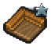

Carved wood (silver quality)
| Carved wood (silver quality) | |
|---|---|
 | |
General Information
| |
Type :
|
Wood |
Stack size:
|
30 |
Source(s)
| |
| Carpenter's workbench II | |
Study Information
| |
Study reward:
|
|

Carved wood (silver quality) is a craft-able crafting material, obtainable by refining wood at Carpenter's workbench II. Its only use is to craft Soul container III (Base).
As of v1.404, it is implemented, and 4 silver quality pieces are used for the construction of the Soul container III (Base).
Recipe
| Carpenter's workbench II | ||
|---|---|---|
| Item Produced | Materials Required | Energy |
| 1× Carved wood (silver quality) |
1× Steel chisel 1× Wooden plank 2× Faith |
- |
Study
| Study table | |||
|---|---|---|---|
| Tech Points | Resources Required | Energy | Notes |
| 10× Faith 10× Science |
- |
Not decomposable | |
| ||||||||